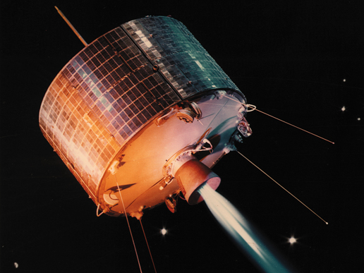
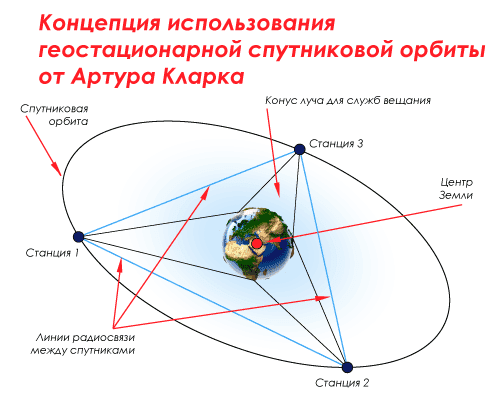
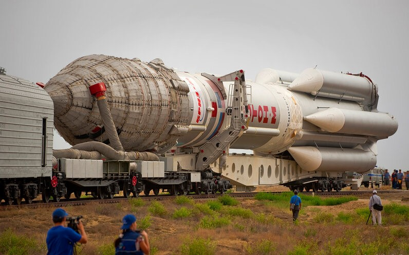

Влияние космоса на информационные технологии
Освоение космоса, космические исследования относятся к одному из основных направлений научно-технической революции. Искусственные спутники Земли, обладая такими особенностями, как возможностью находиться в зоне прямой видимости со значительных территорий поверхности Земли, высокой скоростью перемещения и регулярностью движения, позволяют эффективно решать важные народнохозяйственные задачи: определение координат (геодезия и навигация), передача информации (телевидение, радиовещание, телефонная и телеграфная связь, наблюдение за Землей (исследование природных ресурсов и окружающей среды.

Технические характеристики ракетно-космических систем, а также успехи в создании радиоэлектронной и оптико-механической аппаратуры позволили приступить уже в наши дни к решению конкретных задач. Среди них особо важное значение имеют задачи, связанные с разносторонним и комплексным исследованием природных ресурсов Земли и окружающей среды. Это объясняется по крайней мере двумя главными обстоятельствами. Первое из них связано со все расширяющейся (причем за последние годы темпы растут лавинообразно) хозяйственной деятельностью человека на нашей планете, требующей форсированной разработки природных ресурсов, второе — со все более существенным влиянием человека и его производственной деятельности на природную среду.
×

Один из перых спутников связи
Использование космической техники существенно повысило эффективность системы связи, позволило связать между собой все уголки земного шара. Новые возможности для повышения качества, оперативности и надежности связи открылись с запуском искусственных спутников Земли. Такие спутники отличаются простотой и малой стоимостью. Это могут быть надувные тонкостенные оболочки, не содержащие сложной специальной аппаратуры. Они надежны в работе и могут служить весьма продолжительное время.

Большими достоинствами обладает космическая система связи со спутниками на так называемой стационарной орбите, представляющей собой круговую экваториальную орбиту высотой около 30 тыс. км. Такая орбита характерна тем, что спутник на ней находится в неподвижном относительно поверхности Земли положении (в связи с равенством их угловых скоростей вращения). Со стационарной орбиты обеспечивается большая зона охвата поверхности. Один стационарный спутник может обеспечить круглосуточную связь между пунктами, удаленными друг от друга на расстояние около 17 тыс. км.
×

Концепт использования спутников
Системы космической связи обеспечивают решение национальных задач по удовлетворению внутренних потребностей каждой страны и одновременно расширяют возможности международного обмена информацией.
Сегодня космические системы связи прочно вошли в жизнь. Десятки стран широко используют возможности систем космической связи и телевидения, которые создали предпосылки для обобщения и распространения информации в глобальном масштабе.
Измеряя с помощью бортовой аппаратуры спутника параметры излучения тепла различных слоев атмосферы, можно получить богатый материал для изучения происходящих в ней процессов. Кроме того, спутник может служить хорошим средством для сбора информации с наземных метеорологических пунктов, разбросанных по всему земному шару. За время одного оборота вокруг Земли спутник собирает данные, которые в 100 раз превышают информацию, поступающую со всех метеорологических станций.
Таким образом, космическая техника станет одним из самых эффективных средств в метеорологии, имеющих огромное экономическое значение.
Создание сложнейших ракетно-космических систем, возникновение космической индустрии и решение фундаментальных проблем науки и техники, связанных с полетами в космос, дали массу идей, технических средств и принципиально новых конструктивно-технологических решений, внедрение которых в традиционное производство и использование в различных сферах деятельности человека даст колоссальные экономические выгоды. Благодаря развитию космонавтики физическая наука обогатилась

фундаментальными открытиями в области астрофизики, космического излучения, изучения радиационных поясов Земли, солнечно-земной физики, рентгеновской астрономии и др. Большое значение в современной технике имеет надежность механизмов и машин. Разработка сложных космических комплексов, эксплуатация которых проходит в исключительно трудных и малоизведанных условиях, стимулировала дальнейшее развитие теории надежности, теории проектирования (внедрение системных методов), методов испытаний и экспериментальной отработки и пр. В связи с тем что на космическую технику работают практически все отрасли народного хозяйства, проблемы повышения надежности охватывают и электронику, и измерительную технику, и машиностроение. Таким образом, космонавтика стимулирует повышение надежности в самых различных областях производства. Велико значение ракетно-космической техники в развитии микроэлектроники и вычислительных машин. Острая потребность в малых размерах и незначительном энергопотреблении привела к разработке сверхминиатюрных, компактных и высоконадежных радиоэлектронных приборов и устройств, инициировала развитие транзисторной техники и интегральных схем, которые в последние годы широко употребляются в производстве радиоприемников, телевизоров.
×

РН «Протон»
Большой вклад внесли космические исследования в здравоохранение и медицину. Полеты в космос впервые по-новому поставили вопрос изучения организма человека, его работоспособности в различных условиях, определения его места в сложной кибернетизированной системе.
Рассмотренные вопросы использования космической техники показывают тот большой вклад, который вносит космонавтика в различные сферы деятельности людей. Это и исследование природных ресурсов Земли, и охрана окружающей среды, и связь, и геодезия, и навигация, и метеорология, и др.
Особое значение в наши дни приобрело исследование природных ресурсов и окружающей среды с помощью космических систем, снабженных разнообразной аппаратурой дистанционных измерений из космоса. Этому направлению предстоит внести основополагающий вклад в народное хозяйство.